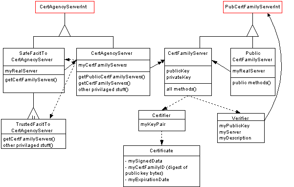
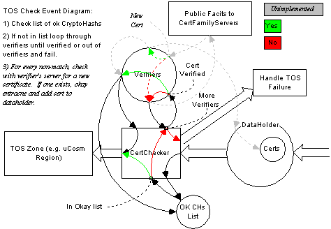

Last updated:[98/05/20 MES]
Mike Slominski: mike@communities.com.
The Certification Agency is the infrastructure necessary to do EC type Certification. The Certification Agency is composed of a master CertAgencyServer, individual certificate family servers, and facet-like interfaces to access these servers. The master server's main job is manage and provide access to the individual certificate family servers. The individual certificate family servers manage and provide access to certificate family information.
Also see the CertificateSubsystem.
The Certification Agency needs to:
Here is an OMT class diagram for the Certification Agency package (ec.app.cert). Some of the classes here are actually in the ec.cert package described in the CertificateSubsystem document.

State and methods
The Certification Agency consists of an agency server object and multiple Certificate Family servers. Both of these server types are written in E and use state bundles for persistence. The agency server maintains a list of Certificate Family servers. It also provides methods to:
A Certificate Family server maintains the family's description, the family's public and private keys, and a list of issued certificates, revoked certificates, and items submitted for certification. The Certificate Family server also provides methods to:
Access
There are two levels of access to Certification Agency and Certificate Family servers: public access and trusted access. Public access generally limits access to sensitive data while trusted access exposes all external server methods. As an example, an entity with trusted access could obtain a Certifier to certify items, add a certificate to a revoked list, and remove a Certificate family from the Agency server. These activities are not available with public access.
Using the Certification Agency
Starting up a fresh Certification Agency results in the creation of two sturdy references that are published to disk: a "trusted" sturdy reference and a "public" sturdy reference. The first thing the Agency's operator (i.e. the Certification Authority) needs to do is to use an administration tool - in conjunction with the trusted sturdy reference - to create one or more certificate families. A certification tool that has access to the trusted sturdy reference can then be used to certify stuff. Currently the only certification tool is the Curator.
Verifiers are used to check certificates. To check a "Prudes-R-Us" "No Nudity" certificate, for example, the agent doing the checking needs to posses a Verifier for that certificate family. Thus, the TOS enforcement code for microcosm's Beach Town regions must be given Verifiers for the "EC Cert" and "Kid Safe" certificate families to check for and verify certificates from these families. In the case of Microcosm, Verifier distribution happens via the curator - which retrieves Verifiers from all of the certificate families it has access to and stores them in the repository. The microcosm startup code loads these Verifiers and gives them to the TOS enforcement objects. The method to retrieve the Verifier from a Certificate Family server is a publicly accessible method - all that is needed is a public sturdy reference to the Certification Agency Server or to the Certificate Family Server itself. Using the repository is probably not the best distribution method.
(this part not fully implemented) If when checked an object is not carrying a certificate, or if the certificate it is carrying has expired, the Verifier doing the checking will contact its' Certificate Family server to see if the object has been certified or recertified. The Certificate Family server will automatically recertify an expired certificate if the certificate is not on the server's revoked list. Below is a logic diagram of a uCosm certificate check.

None (9/1/97).
The biggest assumption is in the validity of SturdyRefs and the use of E. The only other assumption is that public key cryptography works.
The package for the Certificate Agency is ec/app/cert and is found in ec4/javasrc/ec/app/cert. The package is composed of the following classes:
There is a primitive Certification Agency administration tool that resides in src/apps/CertMaker. This tool needs Visual Cafe's Symbeans.jar to compile and run so a slightly special build environment is necessary. The tool can only add certificate families to a Certificate Agency server and needs a trusted sturdy reference to do so.
A trusted sturdy reference to the active certificate agency is checked-in to cvs as media/CertAgencySRef and should remain good as long as the agency it references has been started from a good checkpoint. The sturdy reference that is checked-in now points to a server that has been running on George for quit a while, the server was started from the directory ~mike/CertServer and that's where the current server's checkpoint file is. If a new server is started, then the new TrustedCertAgencySRef should be checked into media as CertAgencySRef.
To start a Certification Agency use something like the following command line:
java ec.e.boot.EBoot ec.app.cert.CertAgencyServerLauncher -ECproperties CertAgency.props
The props file contains information necessary to register with the various PLSs and the name of the checkpoint file ("SaveFile" property). If the checkpoint file exists, the Certification Agency server is started with the saved state.